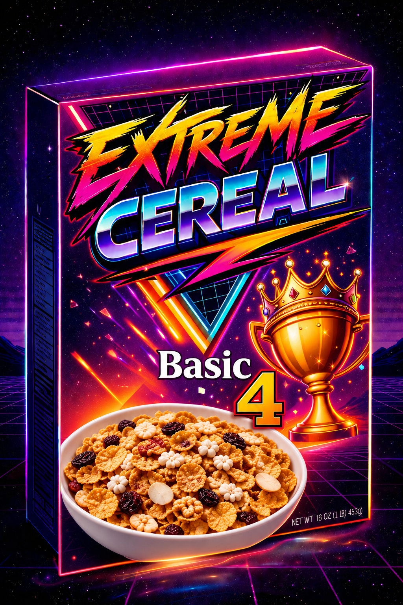
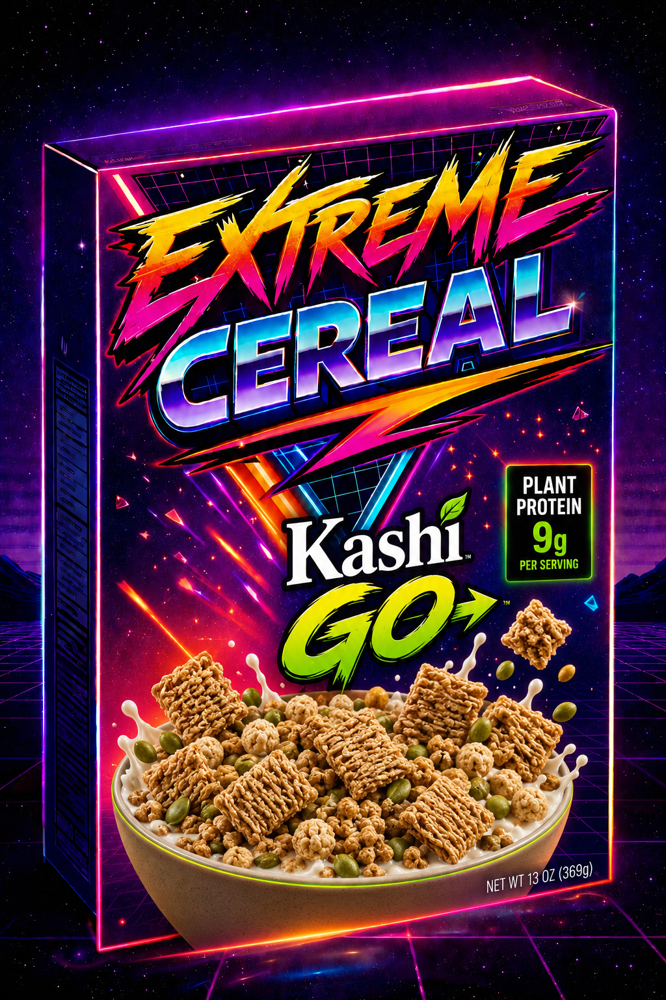
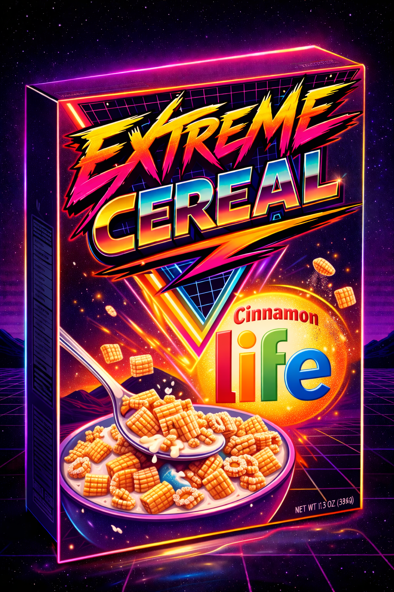
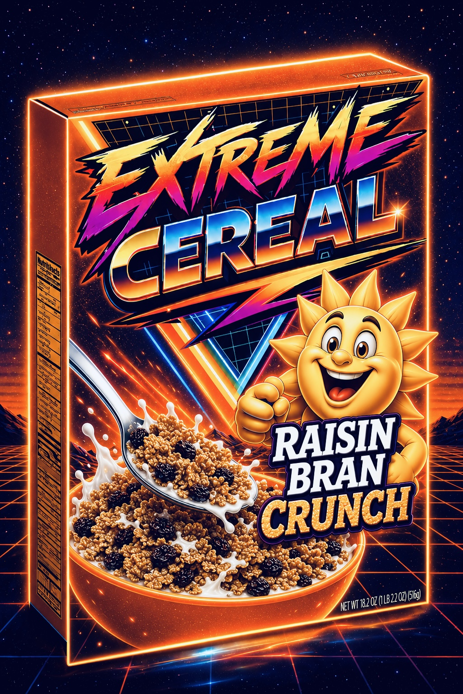
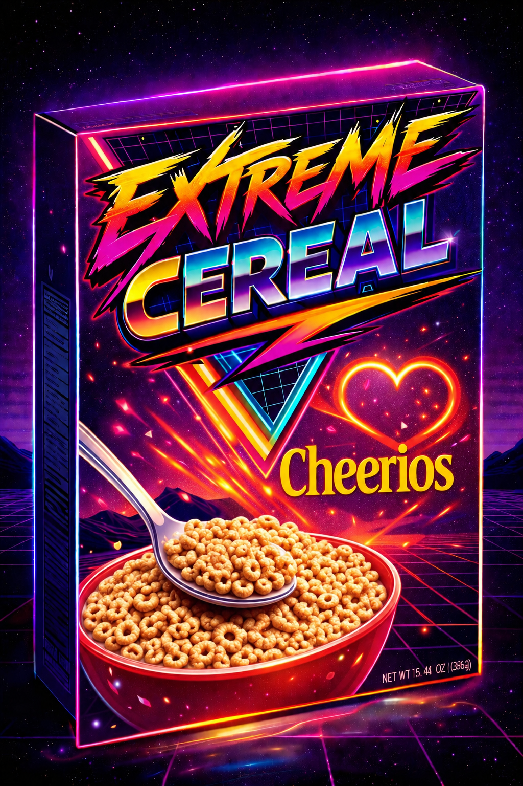
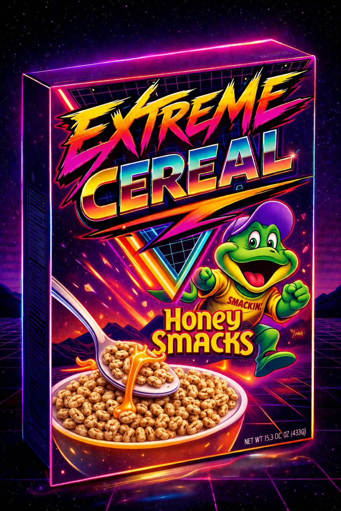
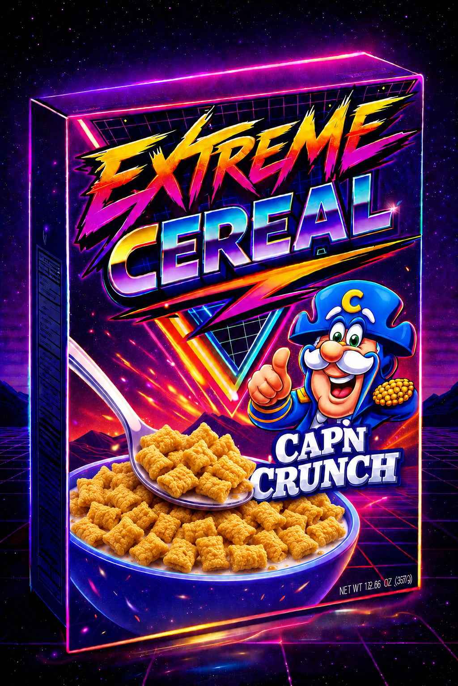

| CEREAL | DANIELLE | ANG | EMILY |
|---|---|---|---|
| 🏆 Basic 4DROP #12 · HALL OF FAME | 1,091 / 5 | 10 / 10 | 100 / 100 |
| Kashi GODROP #11 | 3 / 47 | 0 / 10,000 | 0 / 10 |
| Cinnamon LifeDROP #10 | 8 / 20 | 9 / 10 | 9 / 10 |
| Raisin Bran CrunchDROP #9 | 7 / 15 | 72 / 86 | 3 / 10 |
| Frosted FlakesDROP #8 | 15 / 17 | 100 / 100 | 2 / 10 |
| CheeriosDROP #7 | 7 / 10 | 3 / 10 | 6 / 10 |
| Honey SmacksDROP #6 | 11 / 14 | 4 / 11 | 7 / 10 |
| Cap'n CrunchDROP #5 | 3 / 68 | 6 / 10 | 1 / 10 |
| Cocoa PuffsDROP #4 | 6 / 16 | 9 / 10dry6 / 10milk | 2 / 10 |
| Frosted Mini WheatsDROP #3 | 42 / 50 | 10 / 10 | 90 / 100 |
| Honey Bunches of OatsDROP #2 | 20 / 31 | 11 / 13 | 8 / 10 |
| Lucky CharmsDROP #1 | 12 / 6 | 8 / 10 | 3 / 10 |
★ Scales are not standardized and never will be. Danielle uses whatever denominator feels right that day, Ang once awarded a perfect 100, and Emily has handed out a 2 to a cereal she recommended in the same breath. All scores are final. All scores are correct.

Emily's #1 all-time favorite. It sounds fake — like a placeholder name they forgot to brand — and then it secretly clears the entire aisle. Trail mix breakfast technology. Danielle 1,091/5, Ang 10/10, Emily 100/100.
READ MORE →
This is not breakfast. This is a disciplinary action. Broken hamster habitat material held together by disappointment. For the first time in Extreme Cereal history, Ang and Emily reached complete bipartisan agreement. Danielle 3/47, Ang 0/10,000, Emily 0/10.
READ MORE →
No mascot. No marshmallows. Just little woven squares carrying more cinnamon sugar confidence than the packaging earns. The crunch isn't the oat — the crunch is the payload. Danielle 8/20, Ang 9/10, Emily 9/10.
READ MORE →
Regular Raisin Bran showed up wearing sunglasses trying to convince everyone it is "still fun." Confused, weirdly addictive, just vibes and fiber. Danielle 7/15, Ang 72/86, Emily 3/10.
READ MORE →
No gimmicks, no marshmallows, no weird flavor combinations. Just sugar-coated corn flakes and a tiger who has somehow carried the brand harder than most celebrity endorsements ever could. Danielle 15/17, Ang 100/100, Emily 2/10.
READ MORE →
Nobody has ever ripped open a box of Cheerios with adrenaline. They are calm. Too calm. The cereal equivalent of sitting in a waiting room with beige walls, with the emotional intensity of a thermostat.
READ MORE →
Nobody really talks about them. Nobody is aggressively campaigning for them. And then you actually eat them and suddenly you are sitting there wondering why these weird little sugar frogs are kind of incredible.
READ MORE →
Cap'n Crunch feels like getting jumped by breakfast. It cuts your mouth, leaves a weird film, and feels medically unnecessary. And yet somehow it created civil war-level disagreement within the team.
READ MORE →
Dry, they can absolutely carry. In milk, the entire operation starts collapsing in real time. You do not casually eat Cocoa Puffs in milk. You either lock in or accept defeat.
READ MORE →
There is no reason Frosted Mini Wheats should be this good. None. If you described this cereal out loud, it would sound like a mistake. And yet, here we are.
READ MORE →
Known for its confusing identity crisis of flakes, clusters, and the occasional rogue oat. Described as "reliable," "suspiciously enjoyable," and "something you accidentally eat the entire box of."
READ MORE →
One second you are a functioning adult, the next you are hunched over a bowl at 9pm digging for marshmallows like you are panning for gold in 1849. There is no dignity here. There is only the hunt.
READ MORE →